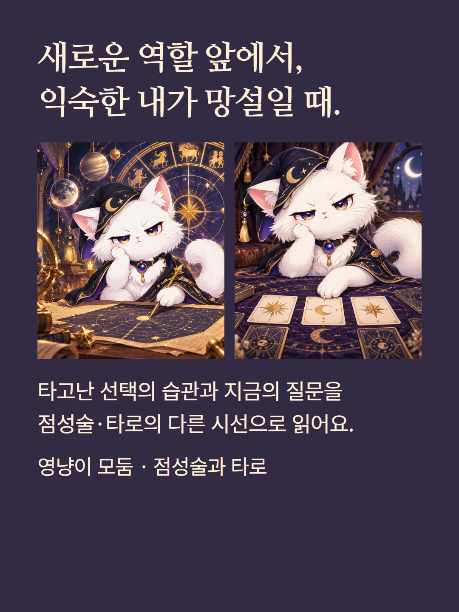
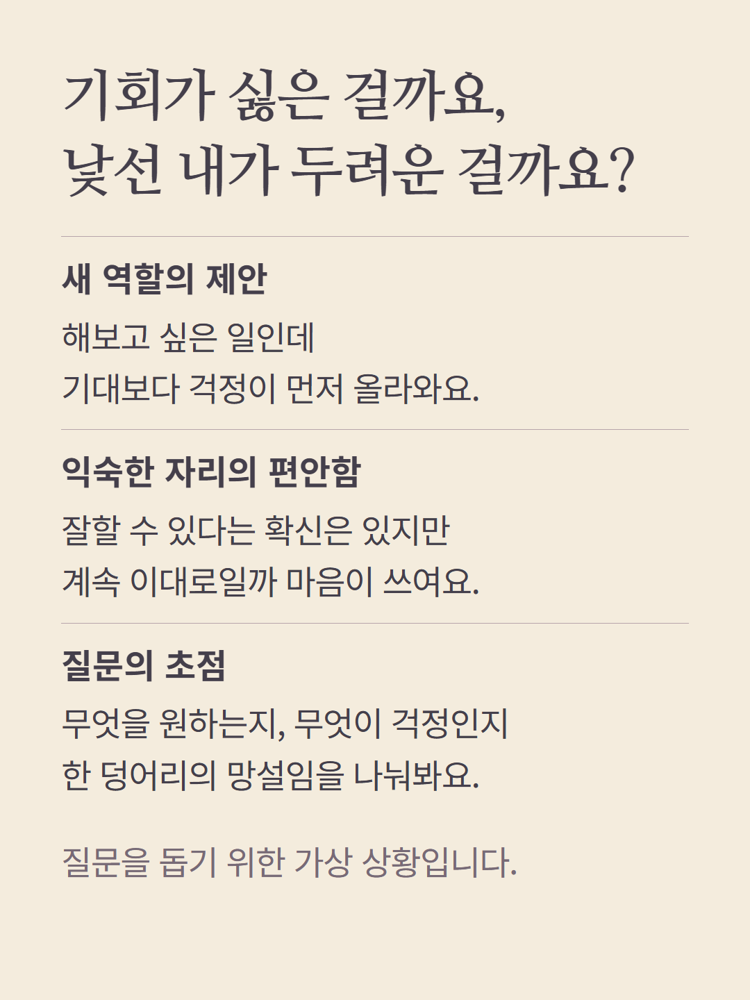
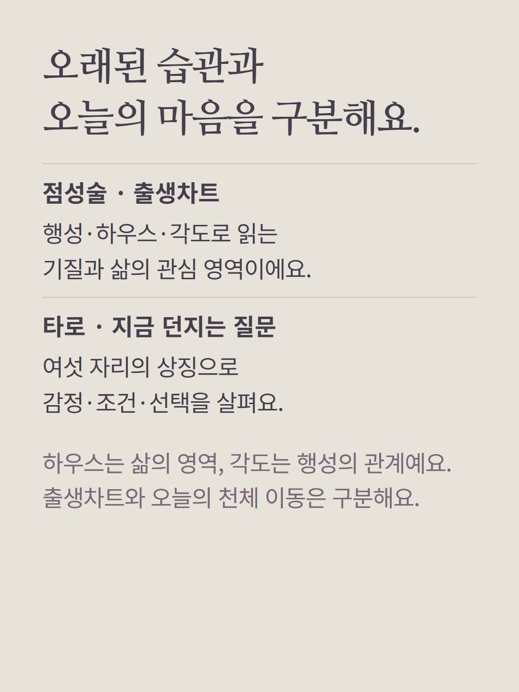
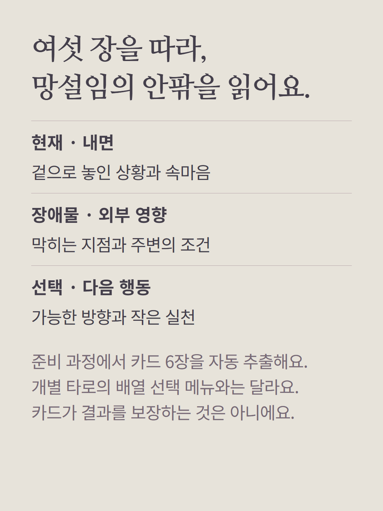
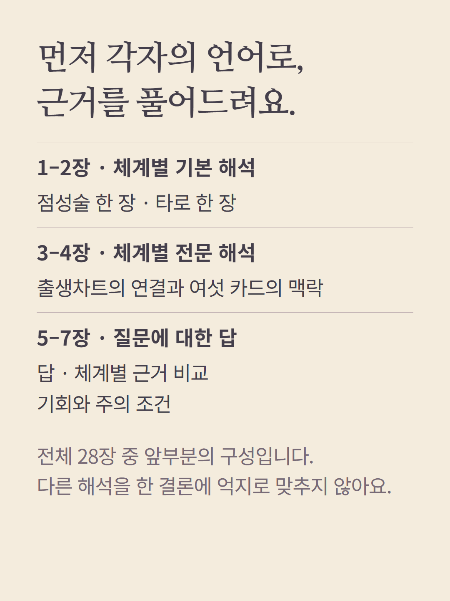
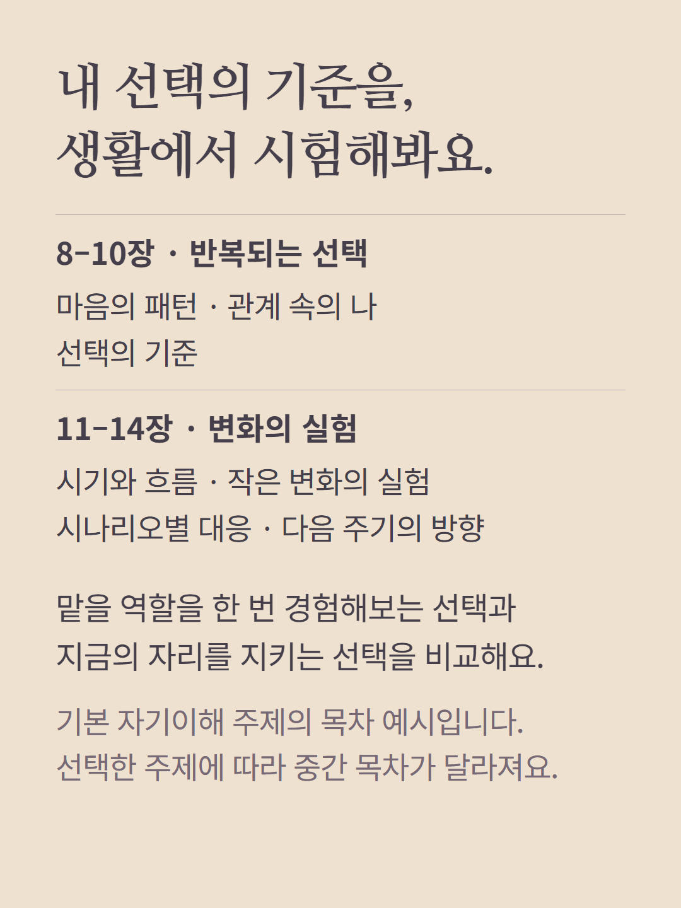
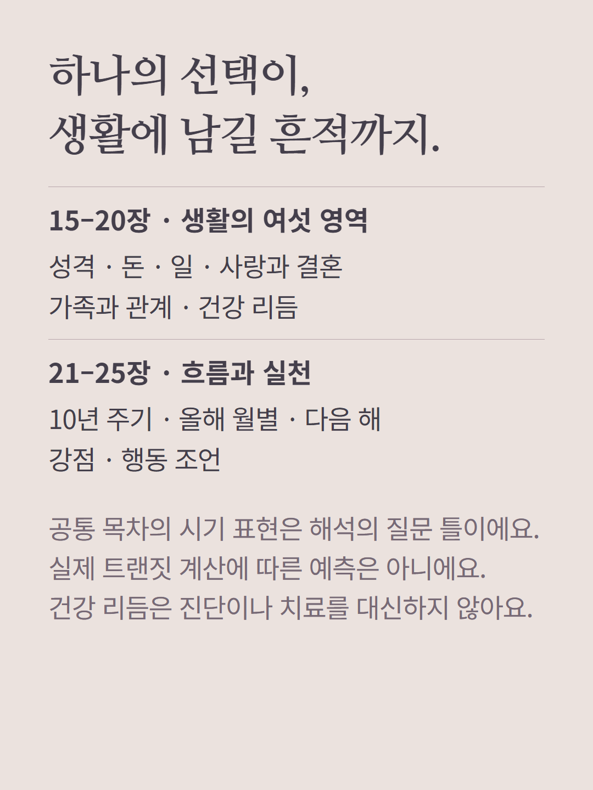
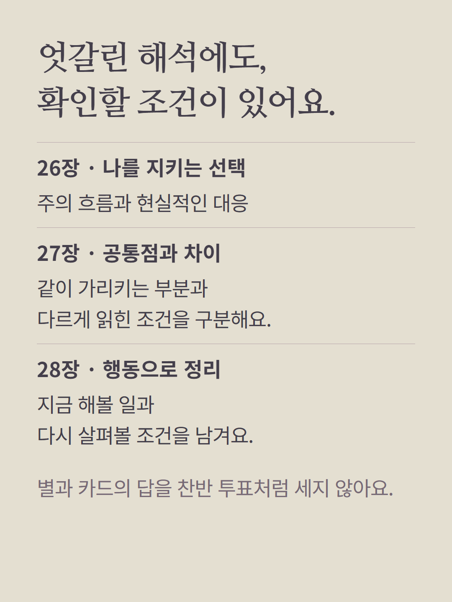
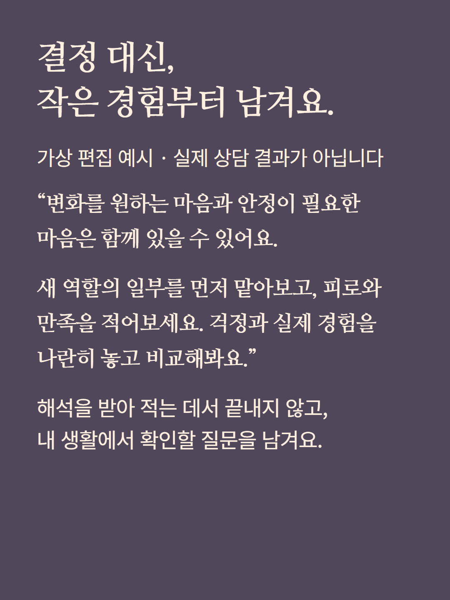
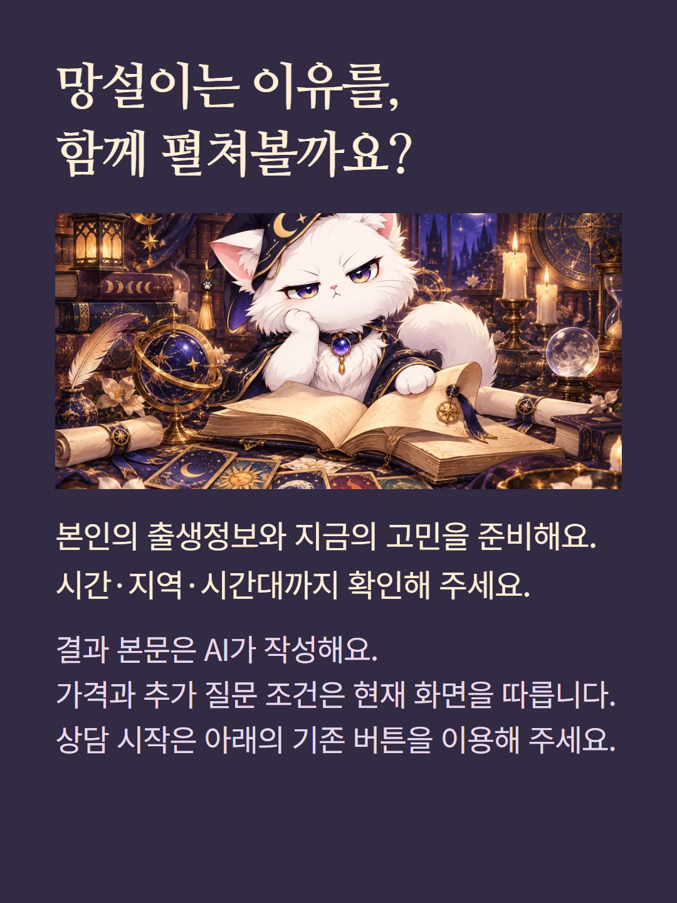

점성술 출생차트와 자동으로 뽑는 타로 6장을 구분해 읽는 개인 모둠 상담입니다. 현재 결과는 28장으로, 주제에 따라 중간 목차가 달라집니다. 출생차트 해석을 실제 트랜짓 계산이나 특정 날짜의 예측으로 표현하지 않습니다. 타로는 상대 마음이나 미래를 확정하지 않습니다. 본인 출생시간·지역·시간대가 필요합니다. 예시는 가상 편집이며 결과 본문은 AI가 작성합니다. 가격과 추가 질문 조건은 기존 화면을 따릅니다.